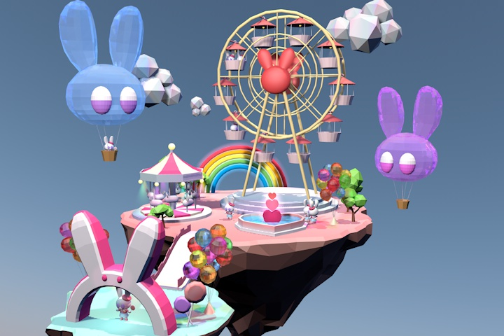
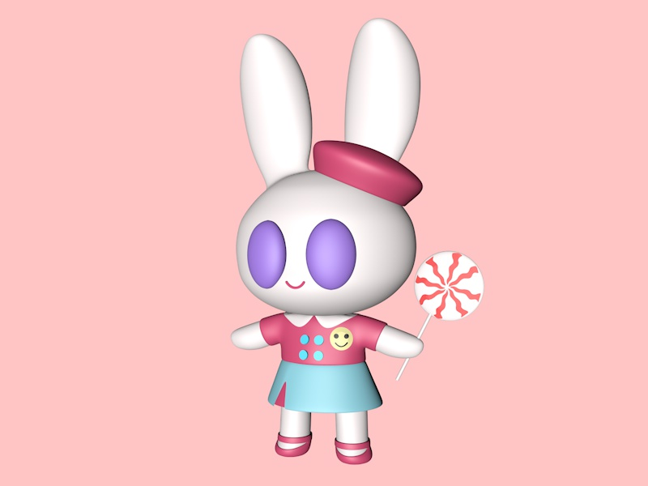
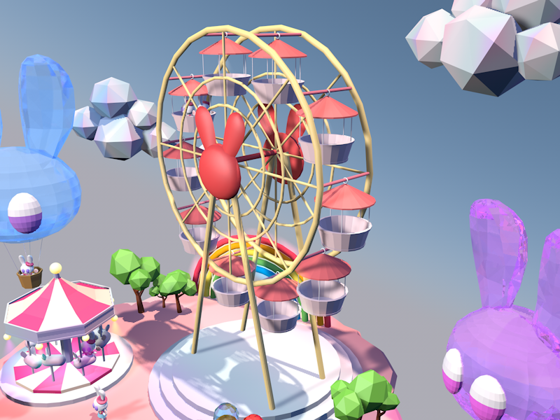
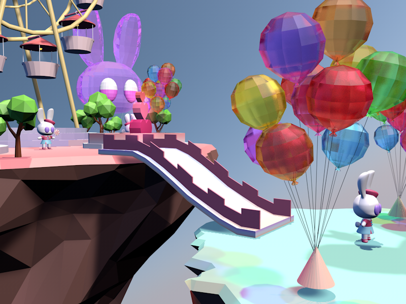
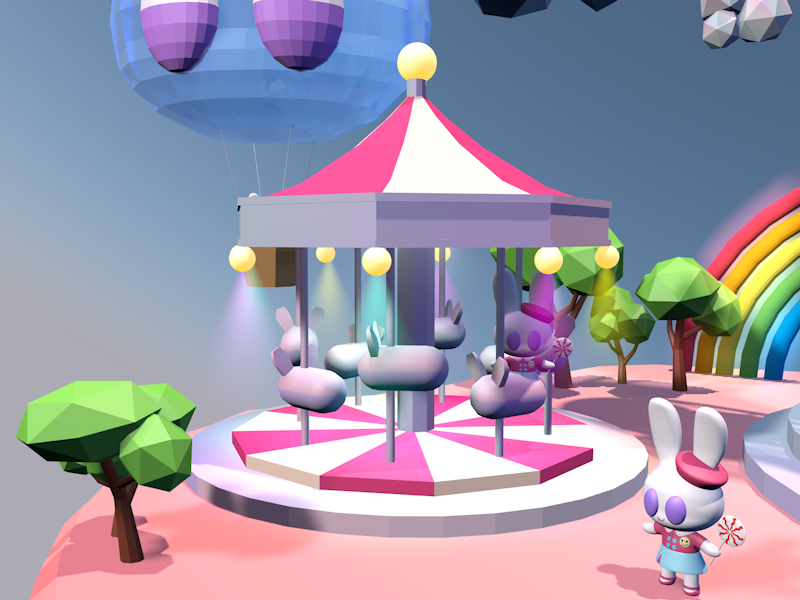
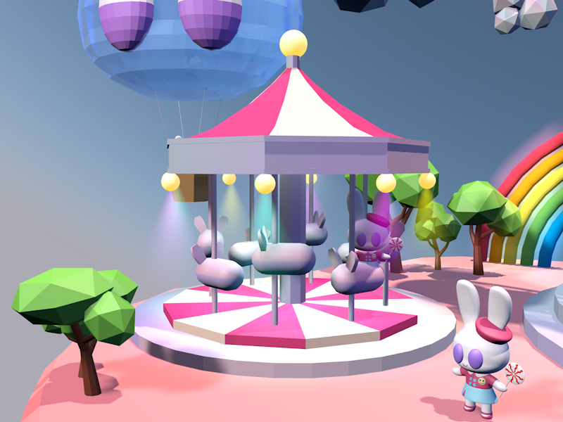
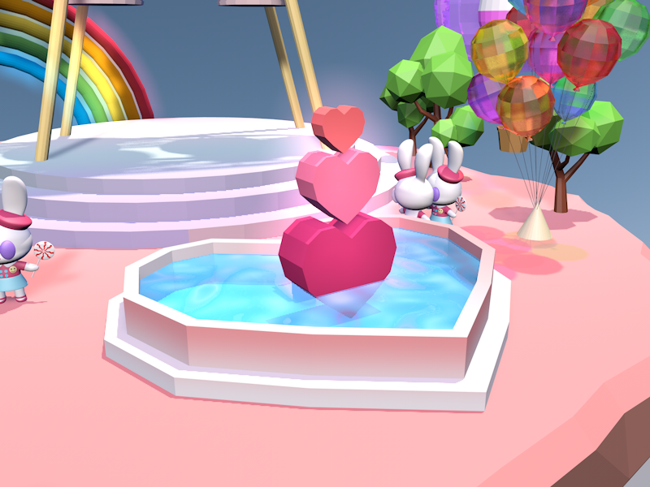
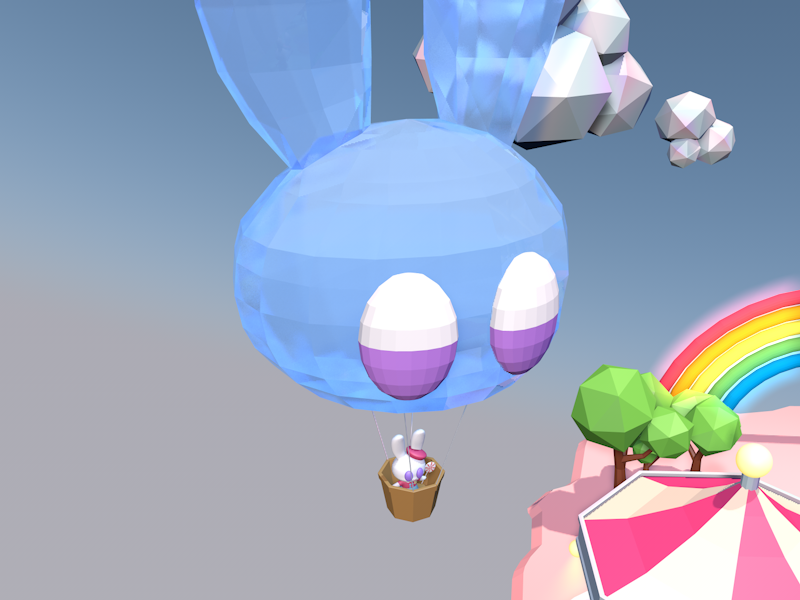

Bunny Land

C4D로 만든 가상 테마파크 바니랜드.
깊은 산 속 놀이공원 바니랜드는 1년내내 불이 꺼지지 않는 환상적인 축제가 가득한 테마파크이다.
불경기로 인해 입장객이 줄어들어 위기에 직면한 바니랜드는 놀이공원의 각 구역마다 특수 매니저를 배치해 손님들에게 즐거움을 주기위해 노력중이다.
토끼들이 운영하는 놀이공원이기에 구석구석 토끼심볼이 가득하다. 바니랜드는 크게 6가지 구역으로 나누어진다. 티켓부스 및 각종 상점들이 즐비한 바니랜드 입구,
관람차와 호수가 있는 당근정원, 바니랜드의 명물 바니코스터와 바니킹이 있는 스릴러존, 1년내내 할로윈 테마로 꾸며진 귀신의 집이 있는 호러존,
회전목마와 티컵 등 아기자기한 놀이기구들이 있는 베이비존, 마지막으로 바니랜드의 핫플레이스 바니캐슬존이다.
이 6개의 구역마다 각자 다른 토끼들이 매니저를 담당하고있고 각 구역의 분위기에 어울리는 유니폼과 성격을 가지고있다.
Story

Lollipop
2년연속 이달의 우수직원 자리를 차지한 바니랜드의 입구 매니저 롤리팝. 직업만족도 최상에 부대끼는것을 좋아하는 롤리팝은 처음 만난 토끼와도 곧 잘 친해지는 친화력 좋은 토끼이다. 과잉친절 롤리팝은 간혹 악의없는 눈새행동으로 진상손님들에게 의도치않은 빅엿을 먹이기도 한다.
Bunnyeye
입구 오른쪽에 위치한 놀이기구는 바니랜드의 명물 '바니아이' 관람차로 바니랜드의 전체적인 모습을 관람할 수 있다. 바니랜드 입구에서부터 요란함을 자랑한다.

바니랜드 입구와 관람차 구역을 잇는 튼튼한 다리. 양 옆의 커다란 풍선묶음이 바니랜드에 대한 기대감을 더해준다. 바니랜드 입구구역 마스코트인 롤리팝이 손님들과 인사를 나누는 장소이다.

Bunny bridge
바니랜드 입구와 관람차 구역을 잇는 튼튼한 다리. 양 옆의 커다란 풍선묶음이 바니랜드에 대한 기대감을 더해준다. 바니랜드 입구구역 마스코트인 롤리팝이 손님들과 인사를 나누는 장소이다.

Bunny-go-round
삐까번쩍한 입구를 지나면 왼쪽에 바로 회전목마가 위치해 있다. 클럽조명을 연상케하는 색색의 미러볼이 돌아가는 회전목마 '버니고라운드'는 바니랜드에서 빼놓을 수 없는 인기 어트렉션중 하나이다.

하트 모양의 분수대가 있는 미니 정원. 하트분수대를 바라보며 뽀뽀를 하면 사랑이 이루어진다는 전설이 있다.
